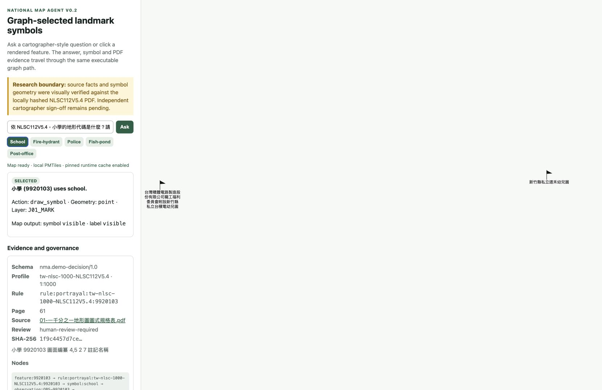

National Map Agent v0.2 — five-scene offline backup
No network or repository access is required after this folder has been copied.

Save/open the 20-second backup video
Use the video, or select any frozen scene screenshot.
No network or repository access is required after this folder has been copied.

Save/open the 20-second backup video
Use the video, or select any frozen scene screenshot.